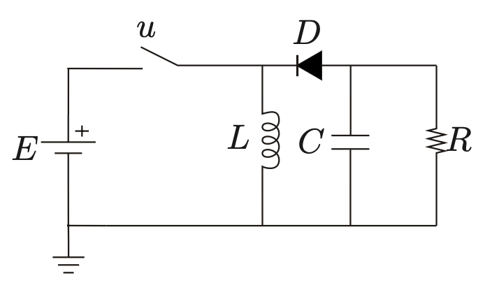
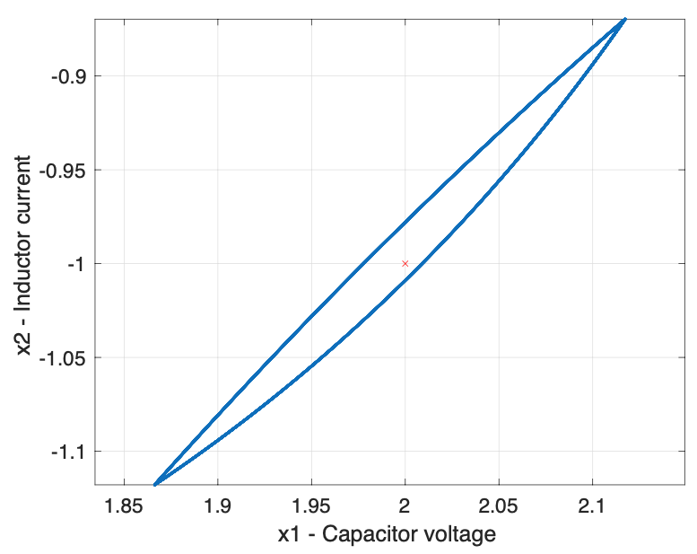

- statement of the problem
- contribution of the work
- why are we doing this?
benmiloud
patino
marcio?
matheus?
- optimization problem
- calculating $x_0$
- application examples
- buck-boost converter
- multilevel converter
- cost function
- constraints
- prediction equation
- optimization problem
- statement of the problem
- linearization procedure
- MPC Problem
- Cost Function
- Dwell-time Constraints
- Application Examples dd
\[\begin{aligned} \color{black}e(t_N) = \Phi e(t_0) + \Gamma \delta t \end{aligned} \]


- contribution
- analisys of the results
- future work
Automatically animate matching elements across slides with Auto-Animate.
\[\begin{aligned} \color{#17b2c3}\dot{x} & = \sigma(y-x) \\ \end{aligned} \]
\[\begin{aligned} \dot{x} & = \color{#17b2c3}\sigma(y-x) \\ \dot{y} & = \rho x - y - xz \\ \dot{z} & = -\beta z + xy \end{aligned} \]